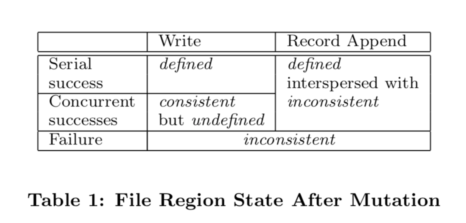
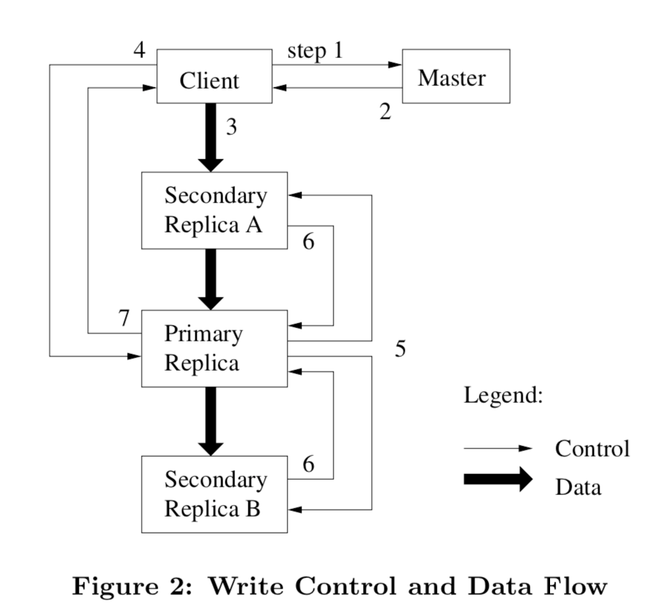

GFS论文阅读笔记
本文是我阅读GFS论文的一个简要笔记。
Table of Contents
1 设计总览
1.1 特性
GFS设计的时候几个特性和取舍点： 1.由于采用大量的常规机器，错误是常见的，所以需要实时监控、容错和自动修复机制。 2.文件很大，总体是TB级别的，单一的几个GB的文件很常见。也支持KB级别小文件，但优化不是必须的。 3.负载主要由两种读构成：大的流读取和小的随机读取 4.负载还包括大量的序列写，文件采用Append的方式而不是覆盖的方式进行修改。 5.系统需要实现多个客户端并发写入文件的语义。 6.高带宽比低延迟重要，目标客户端通常采用批处理的方式来交互。
1.2 API
GFS提供常规的文件系统API：create,delete,open,close,read,write，除此之外，还支持snapshot和record append. snapshot低成本复制，record append允许多个客户端并发操作时以最小的锁代价来保持原子性等。
1.3 架构
一个master + 多个chunk servers的架构，然后应用通过集成GFS客户端来和master以及相应的chunk servers通信。 可以参考论文上的Figure1图片。
文件被分成固定尺寸的chunks，根据设定存到多个chunk servers上（论文上说默认3个）。 每个chunk在创建时，被master分配了一个无法修改的全局惟一的64bit的chunk handle。 chunk servers在本地的linux文件系统上读写文件的时候通过chunk handle来
master管理所有文件的元信息：namespece,access control infomation, mapping from files to chunks, the current location of chunks。 还包括系统级别的活动: 1.chunk lease管理 2.孤儿chunk 回收 3.chunk在chunk servers之间迁移 还有master和chunk servers直接的：hearbeat和收集状态信息等。
GFS客户端访问master获取元信息，然后和chunk servers通信获取数据。 GFS client和chunk servers不会cache 传输的文件数据，因为太大了。 不过clients会cache元数据。 chunkservers不需要cache file data因为本身linux的文件系统会自由缓存常访问的文件到内存。
1.4 Signal Master
这里描述了客户端和master以及chunk servers的请求过程。
采用单一master的方式简化了整个设计，但master容易成为瓶颈，所以设计上需要注意。 比如客户端不会从 master上读写文件，客户端请求master获取文件存储在哪个chunk server上，并且将这些信息缓存一段时间。
1.5 Chunk Size
选择chunksize 为64MB，64MB比通常的文件系统区块大小(通常512Bytes)大得多，这样做的几个好处，也有一些弊端。 好处:
- 减少clients和master通信次数
- 由于chunk比较大，客户端访问一个chunk server操作的可能性比较大，也降低了网络负载。（参考原文描述）
- 减少master meatadata存储的数量
缺点：
A small file consists of a small number of chunks, perhaps just one. The chunkservers storing those chunks may become hot spots if many clients are accessing the same file. In practice, hot spots have not been a major issue because our applications mostly read large multi-chunk files sequentially.
可能的解决途径：存储到更多的分片、错开访问、允许客户端从其他客户端获取等
However, hot spots did develop when GFS was first used by a batch-queue system: an executable was written to GFS as a single-chunk file and then started on hundreds of ma- chines at the same time. The few chunkservers storing this executable were overloaded by hundreds of simultaneous re- quests. We fixed this problem by storing such executables with a higher replication factor and by making the batch- queue system stagger application start times. A potential long-term solution is to allow clients to read data from other clients in such situations.
1.6 元数据Metadata
Master主要存储三类元数据: 1.file and chunk namesapces
- mapping from files to chunks
- locations of each chunk's replicas
上面都存储在master内存里。 前两者还会以"operation log"的方式持久化存储在master的硬盘上(还有checkpoint机制)，并且复制给远端的机器。这样方便恢复master。 第三类数据在master启动的时候会询问chunserver相关信息，不做持久存储。
1.7 一致性模型Consistency Model
1.file namespace mutations是原子性的，由master通过锁来全局控制 2.file region的状态变化参见下面的图标table 1，与是write还是 record append以及 顺序操作、并发操作以及是否成功相关。
这些是大体是如何保证的，以及对客户端的影响，参见论文2.7
状态转换图表(论文table 1) 
2 系统交互
2.1 lease
引入leases概念，在chunserver中选取一个作为primary，其他作为secondary(也就是chunservers之间建立主从关系)。减少master的负担。
2.2 data flow
另外将control flow和 data flow解耦，也就是说，client可以将数据先传输到一个（可以是地理位置近的）secondary chunkserver上，然后这个server再将数据传输到它最近的还未有这个数据的server上，以此复制到整个网络。 数据流在不同server间的传输是线性的，这样也是最大的利用机器带宽，每个机器的出网带宽都被用来传输给一个数据接受方，而不是同时传输给多个。
2.3 atomic record append
gfs提供原子性的操作:record append。也是多个客户端并发操作同一个文件时使用的。这样不需要额外的同步机制（比如一个分布式的锁）。 在record append的机制下，客户端指定写的数据，gfs来至少一次原子性的把它添加到文件上。文件通常server as一个multi-producer/sigle-consumer的队列，或者包含合并各个客户端的结果。
数据大小方面，record append的数据有最大限制(64MB的1/4)。 对于目前的记录到的chunk，如果操作的数据使得目前的chunk溢出（chunk最大的size(64MB)），那么primary会将当前的chunk padding完，然后通知各个secondary也如此做，最后通知clients在下一个chunk重试操作。 如果操作的数据在当前chunk放得下，那么primary将data append执行，然后通知secondaries在同样的offset来写入，最后回复客户端成功。
如果record append在某一个副本失败了，那么客户端会重试。也就是说同一个chunk的不同副本可能会包含不同的数据（很有可能是一个记录的不同重复的副本）。 gfs不保证所有的副本是bytewise idential，它只保证数据至少被一次原子性的写入。 这个是基于，如果chunkservers回复操作成功的话，那么所有的副本里都会写在同一个offset。这样即使是其他的副本变成了primary，新操作的成功的append offset一定是所有副本最高的。
客户端何处理inconsistent regions的问题（TODO）
2.4 snapshot
当master收到客户端对文件或者目录的snapshot请求时，它向所有相关的chunk的primary server撤回lease. 然后等撤回后，master先将该操作记录存储在硬盘上，然后应用到内存中保存的元信息的状态上（也就是复制相应的元数据m -> m'，这些新复制的元数据m'指向和m一样的chunks）。
snapshot操作执行完后,如果有客户端想写入某个chunk C，那么master会发现有两份元数据(m和m')指向C，它会让有C的server创建一个新的C'。（创建的时候都是server本机复制，不涉及网络传输）。 然后master保证这些副本里的一个lease来操作C'。（这里总结的有点乱，可以看原文3.4。）
2.5 其他
还有一些细节，比如chunkserver对于接收到的数据的缓存、primary的排序、以及client对错误的处理，详细见论文3.1
交互流程图如下（论文figure2）:

3 Master Operation
master处理所有namespace相关操作，以及管理整个系统的chunk replicas。
3.1 namespace管理和锁
由于有些文件操作会花费一些时间，而同时不希望其它不想关的操作一直等待，所以采用锁的机制来管理namespace如何并行操作如何序列执行的。
GFS将namespace表示成一个full-pathnames 到 metadata的查找表。同时相同的前缀会压缩。这样的数据结构可以高效地表示在内存里。
每个路径上的node都会关联一个read-write锁。比如master operation涉及到一个路径 /d1/d2/.../dn/leaf ，它会在 /d1, /d1/d2, …, /d1/d2/.../dn 上加上一个read 锁，
然后在 /d1/d2/.../dn/leaf 上增加一个read或者write锁。这样设计的好处之一是允许同一个目录并发的操作。
由于namcespace可以包含非常多的node，read-write锁对象惰性分配，当不需要的时候再删除，而且相互之间以一致的顺序来获取（预防死锁）： 先按照namcespace tree里的顺序，然后同一目录下按照词典顺序排序。
3.2 副本放置 replica placement
chunk副本分配策略有两个目的： 1.最大化data reliability和availability 2.最大化网络带宽利用率
所以不仅需要将副本分配到不同的机器上，还需要分配到不同的机架(rack)上，防止一个rack整体遇到问题，由于不同rack之间到网络传输速率比同一个rack不同机器之间的小了很多， 所以在读写时会要考虑到跨rack的形式。
3.3 Chunk副本的创建、重新复制和均衡
chunk replicas创建的3个原因:
- chunk creation
- chunk re-relication
- chunk rebalancing
3.3.1 创建
创建一个chunk的时候，选择哪里去存放的时候，需要考虑的因素:
- 放到磁盘利用率低的chunk servers上，这回均衡所有服务器的磁盘使用率
- 限制在每个chunk server上“最新创建”的的频率，因为“最新创建”多了，意味着之后的读写也多
- 将副本分配到不同的rack上
3.3.2 重复制
当一个chunk的副本数量小于设定的值，master会re-replicate这个chunk。 每个需要被re-replicated的chunk会排一个优秀顺序，比如： 1.差两个副本的优先级比差一个的高 2.live files的副本的优先级比deleted files的副本的优先级高 3.block客户端进程的的chunk的副本优先级高
master会选择优先级最高的，然后选择相应的chunk server来通知它复制数据，选择哪个server的考虑因素和上面新建是一样的。
为了复制时不影响client的流量，master会现在clone操作的数量，每个chunk server也会限制其clone相关的带宽占比。
3.3.3 重分配
master会阶段性的检测目前的副本分布来达到更好的磁盘利用率以及负载均衡。 当有新的chunkserver加入时， master会逐渐的的复制过去数据而不是瞬时复制好多（考虑到流量）。 通常也会选择移除那些磁盘剩余空间低于平均值的server上的副本。
3.4 Garbage Collection 垃圾回收
当一个文件被删除时,gfs并不是立即回收相应存储空间的。文件会被重命名并标记上删除时间。 在之后master会扫描文件系统namespace，如果删除时间在某一段时间之前（比如过了三天了），那么会在文件系统上删除。
在扫描namespace时，也会寻找孤儿chunks删除这些chunks的metadata. chunk servers在每次和master的HeartBeat消息时会报告其有哪些chunks， master会回复哪些chunks不再存在于metadata中，chunkservers可以自由删除这些。
采用这种垃圾回收模式的考虑： 1.在一个大规模的分布式系统中，错误很常见，所以容易发生因某些错误而存在的无效副本等。垃圾回收提供了一个简单可靠的方式来处理这些错误文件。 2.它将回收存储空间合并到了常规后台任务中，这样可以集成到其它消息中通信、可以批处理和当master相对空闲时操作。 3.延迟删除提供了一个机制防止意外和不可逆的删除
不好的地方： 磁盘吃紧的时候无法立即删除降级磁盘使用率，特别是在一些需要不断重复的创建和删除临时文件的时候。
解决方案：
- 如果一个文件被显式地再删除，会加急回收过程
2.允许用户在不同的namcespaces上应用不同的分片和回收机制，比如说有些文件的chunks不需要额外副本存储，并且可以立即删除等。
3.5 陈旧副本检测 Stale Replica Detection
master会维护chunk version number来区分chunk servers上存储的副本的新旧。防止由于server宕机导致的文件操作不是最新的。
当客户端写chunk的之前，master分配一个chunk的lease的时候，它会增加chunk版本号，并且通知其它副本。 master和副本都会持久化存储这个版本号。
如果master发现有些chunk server的版本号过旧，会将这些标记为要移除。垃圾回收的时候会去移除这些副本。 同时，master也会在和client以及chunkserver通信时带上chunk的版本号来作双重保证不会使用旧的。
如果master发现版本号比master记录的还新，那么会根据这个新的版本号来更新。
4 容错和诊断，fault tolerance and diagnosis
4.1 高可用 High Availability
使用两种策略来实现高可用：快速恢复和副本
4.1.1 快速恢复
master和chunserver都设计成可以根据日志快递恢复状态。
4.1.2 chunk副本
每个chunk在不同都rack上会创建一定数量的副本，默认数量是3，可以根据不同namespace设置不同的副本数量。
除此之快，还可以考虑其它冗余方式，比如例如parity(TODO 什么是parity 奇偶校验位?)和erasure code.
4.1.3 master副本
master本身也会将操作日志和checkpoints复制到不同的机器上。 对于master的状态操作会等日志被存储到本地磁盘和复制到副本上才会认为成功。
简单起见，当后台进程（比如垃圾回收）内部改变系统时候，也会有进程来负责master的状态改变。 当它失败时，可以及时重启，如果机器故障，外部的监控系统会重启一个master。客户端访问失败后会重试到请求这个新起来的master(借助DNS类似的域名转发功能)。
初次之外，还有shadow master提供对外文系统的只读访问。 它们可能比master状态稍微延迟一点。 它们提供了对于不经常修改的文件的访问的可用性。
4.2 数据完整性 Data Intergrity
chunkservers通过给chunk添加checksum来保证数据的完成性。 一个chunk被划分成64kb的区块，每一个块有一个32bit的checksum。 checksums保存在内存里，也会持久化存储到logging里。
处理读请求时，chunkserver会先校对读取范围内的数据的checksum。如果不对，会返回错误给请求方（可以是client或者其它server），并且报告给master。 然后master会新创建一个复制，然后通知这个chunkserver删除这个无效的副本。
同时chunkserver在idle时期会启动检查checksum任务，这也减少了了在读取时发现错误的可能性。
4.3 诊断工具 Diagnostic Tools
采用尽可能详细的日志来记录系统发生了什么，比如不同服务的启动停止，各种RPC请求等。
5 其它
5.1 Measurement
这部分实测数据没有细看（TODO）。
5.2 Experiences
这部分主要概述了构建和部署GFS遇到的一些linux相关的问题。没有细研究。
5.3 Related work
这部分主要概述了其它一些系统（AFS, xFS, swift, Frangipani,RAID approches， Lustre，NASD架构，River…）相比，GFS的考虑和侧重。
5.4 结论
这部分概述了GFS这样设计历程和原因等等。